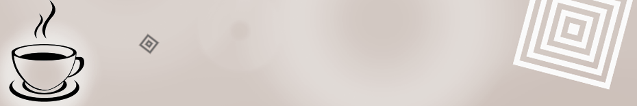
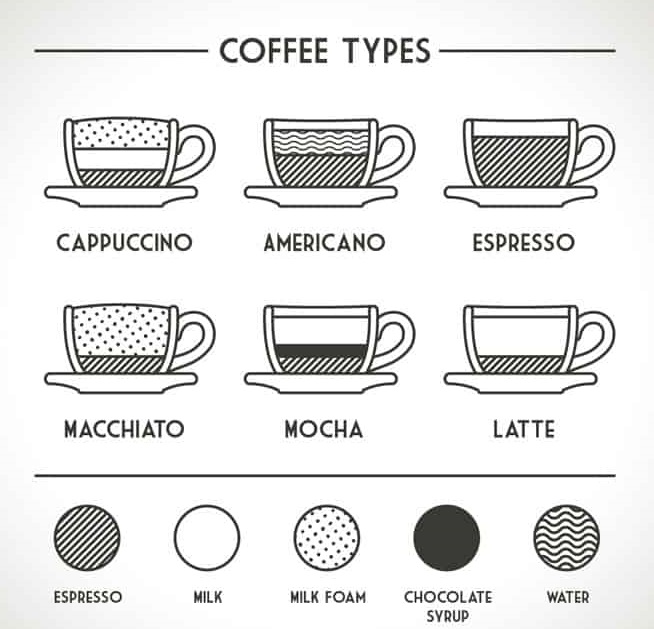
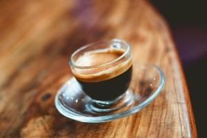
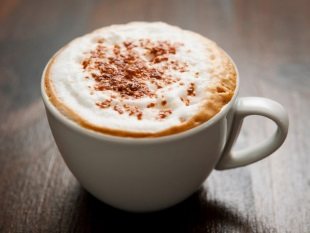
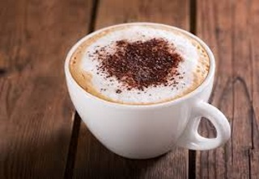
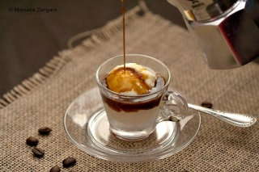

|
 |
|
Espresso based drinks are coffees made with a cappuccino machine that share three common ingredients: espresso, steamed milk and foam. The main differences between them are the
proportions of espresso, steamed milk and foam within the beverage.
Below are three popular machines used to make them. |

|
Different types of Espresso Drinks ☕ in a nutshell
Espresso (Short Black)The espresso (aka short black) is the foundation and the most important part to every espresso based drink. So much so that we've written a guide on how to make the perfect espresso shot. But for the purposes of this post an espresso consists of: |
.jpg) |
| ☕1 Shot of espresso in an espresso cup | |
Double Espresso (Doppio)A double espresso (aka Doppio) is just that, two espresso shots in one cup. Therefore a double espresso consists of: |
.jpg) |
| ☕☕2 shots of espresso in an espresso cup | |
Short MacchiatoA short macchiato is similar to an espresso but with a dollop of steamed milk and foam to mellow the harsh taste of an espresso. You will find that baristas in different countries make short macchiatos differently. However the traditional way of making a short macchiato is as follows: |
 |
| ☕1 Shot of espresso in a short glass or espresso cup. A dollop of steamed milk and foam placed on top of the espresso | |
| The key to the perfect short macchiato is the rule of thirds. That is you want three different colored layers in the macchiato. A bottom dark layer to represent the espresso, a middle layer that mixes the espresso and the milk, and a top layer of predominantly steamed milk. Refer to the picture above as an example. | |
Long MacchiatoA long macchiato is the same as a short macchiato but with a double shot of espresso. The same rule of thirds applies in the traditionally made long macchiato: |
 |
| ☕☕2 shots of espresso in a tumbler glass or cup. A dollop of steamed milk and foam placed on top of the espresso | |
| The key to making the perfect three layers is to place the dollop of steamed milk and foam on top of the espresso and then gently turning the cup clockwise a few times to mix the milk and espresso. | |
RistrettoA ristretto is an espresso shot that is extracted with the same amount of coffee but half the amount of water. The end result is a more concentrated and darker espresso extraction. It is made as follows: |
 |
| ☕Extract a standard espresso shot with half the amount of water. Alternatively turn off a normal espresso extraction before the espresso starts to blonde. | |
Long Black (Americano)A long black (aka americano) is hot water with an espresso shot extracted on top of the hot water. It is made as follows: |
.jpg) |
| Fill a cup with 2/3rds full of hot water. Extract 1 shot of espresso over the hot water | |
| Make sure you back-wash your portafilter before making a long black, otherwise you might find grinds from your coffee grinder floating in your coffee. | |
Cafe LatteA cafe latte, or latte for short, is an espresso based drink with steamed milk and micro-foam added to the coffee. This coffee is much sweeter compared to an espresso due to the steamed milk. It is made as follows: |
 |
| ☕Extract 1 shot of espresso into a tumbler glass. Add steamed milk. 1cm of micro-foam on top of the steamed milk | |
CappuccinoA cappuccino is similar to a latte. However the key difference between a latte and cappuccino is that a cappuccino has more foam and chocolate placed on top of the drink. Further a cappuccino is made in a cup rather than a tumbler glass. It is made as follows: |
 |
| ☕Extract 1 shot of espresso into a cup. Add steamed milk. Add 2-3cm of micro-foam on top of the steamed milk. Sprinkle chocolate on top of the coffee | |
Flat WhiteA flat white is a coffee you'll primarily find in Australia and New Zealand. It is made the same as a cappuccino expect it does not have any foam or chocolate on top. It is made like this: |
 |
| ☕1 shot of espresso into a cup. Add steamed milk into the cup but no micro-foam | |
Piccolo LatteA piccolo latte is a cafe latte made in an espresso cup. This means it has a very strong but mellowed down espresso taste thanks to the steamed milk and micro foam within it. There are two ways of making a piccolo latte, with either 1 espresso shot or 1 ristretto shot: |
 |
| ☕1 shot of espresso or 1 ristretto shot of espresso in a espresso cup. Add steamed milk and small amount of micro-foam. | |
MochaA mocha is a mix between a cappuccino and a hot chocolate. It is made by putting mixing chocolate powder with an espresso shot and then adding steamed milk and micro-foam into the beverage. The steps are as follows: |
 |
| ☕Extract 1 shot of espresso into a cup. Add one spoon of chocolate powder into the espresso shot and mix. Add steamed milk. Add 2-3cm of micro-foam. Sprinkle chocolate powder on top | |
AffogatoAn affogato is a simple dessert coffee that is treat during summer and after dinner. It is made by placing one big scoope of vanilla ice cream within a single or double shot of espresso: |
 |
| Add one scoop of vanilla ice-cream into a tumbler glass milk. Pour a single or double shot of espresso over the vanilla ice-cream. | |